Jeden z moich ulubionych smakow. Nie zakwalifikowal sie on jednak do tierlisty, ze wzgledu na jego odmienna nature bycia bardziej ice tea, niz energetykiem. Nie mniej jednak jest to zdecydowanie smak godny polecenia, idealny na letnie cieple dni, lecz moglby byc orobine mniej slodki.
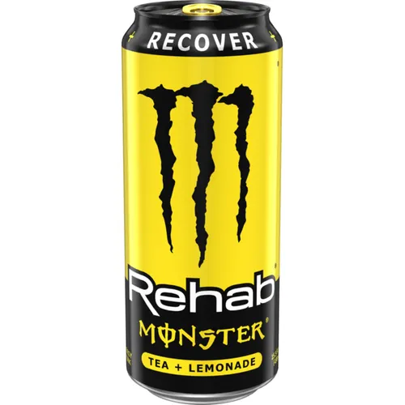
Ta lista niemoglaby sie obyc bez klasyka. Ustawilem go na ostatnim miejscu ze wzgledu, ze nie jest on wybitnym klasycznym smakiem energetyka, a nawet moglbym powiedziec, ze w tej kategorii w porownaniu z innymi markami, jest on mierny. Nie mniej jednak musial sie on pojawic w tej tierliscie, poniewaz bez niego nie byloby innych smakow.
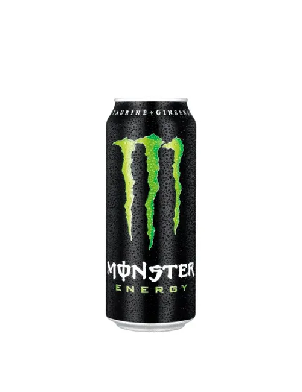
Pewnie zaskocze wiele osob pozycja tego smaku, ale nie uwazam ze w porownaniu z innymi smakami powinien sie on uplasowac wyzej. Jest to dobry smak, jednak jest on za slodki. Nie wyobrazam sobie picia go daily, jednak raz na kilka miesiecy siegam po niego jak zlapie mnie ochota.
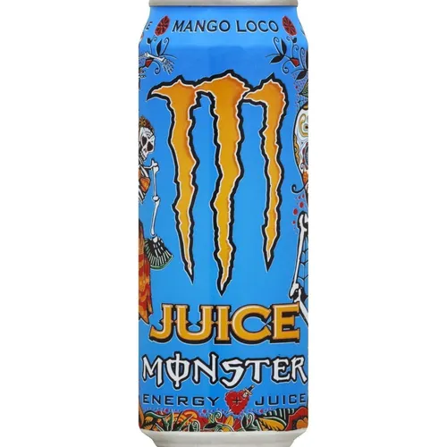
Ten smak jest chyba jednym z nowszych w Polsce. Ustawilem go wyzej od poprzednika ze wzgledu na to, ze byl on bardziej zlozony. W tym mozna wyczuc wiele tropikalnyc owocow, ktore skladaja sie w spojna calosc. Niestety minusem tego smaku tak jak u poprzednika jest ogromna ilosc cukru, ktora zabija sam smak napoju.
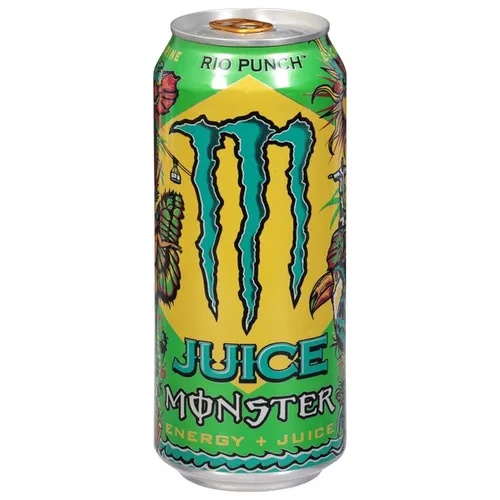
Teraz oddalamy sie od slonecznych tropikow, a przenosimy sie do pieknej, chodz czasami chlodnej Europy. Jednak chlod temu smakowi zdecydowanie sluzy. To slodziutkie winogrono jest idealne zarowno jak i w upalne letnie dni jak i lodowate zimne noce. Jest to napewno jeden z lepszych, a napewno popularniejszych smakow, jednak nastepne pozycje go bija na glowe.
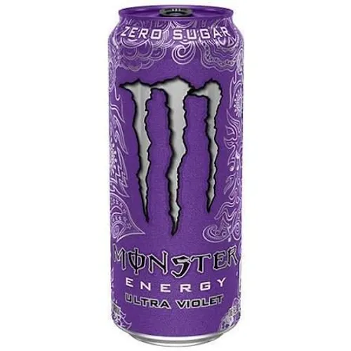
Po tych fioletowych klimatach, przenosimy sie drakkarem do mroznej Norwegii. Gdyby X wieczni wikingowie zyli w tych czasach, zdecydowanie wybrali by ten smak. Czuc w nim soczyste lesne jagody z nutka jerzyny. Przez wielu ten smak jest traktowany jako najlepszy, jednak dla mnie wcale taki nie jest. Jest on bardzo dobry co widac po jego miejscu, jednak kolejne pozycje sa lepsze.
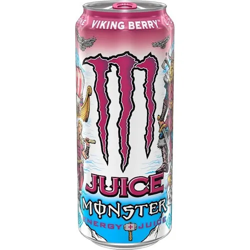
Niekwestionowany krol oraz ikona kulturystyki. Kazdy gymrat chociaz raz musial go wypic. Jest to chyba najbardziej kultowy smak, jaki istnieje. Zawsze gdy jestem w sklepie to czuje jak na mnie patrzy, jest to idealny smak do picia daily. Praktycznie kazdego dnia mam na niego ochote, lecz nastepna czworka z nim wygrywa, chociaz decyzja o postawieniu go na tym miejscu nie byla prosta.
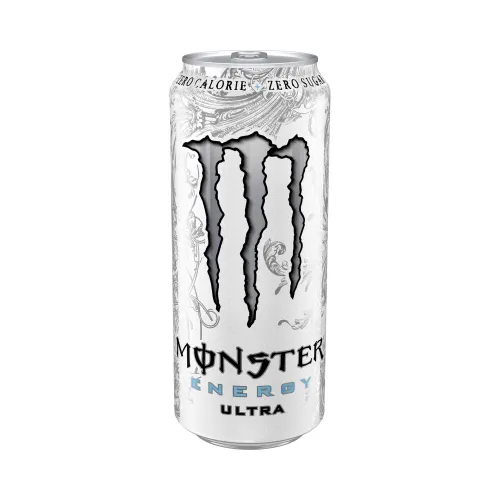
Nie postawilem tego smaku wyzej od poprzednika ze wzgledu na jego kolor. Postawilem go wyzej, ze wzgledu na jego zajebisty smak. Wisnia i czarna porzeczka, najlepsze polskie letnie owoce, no moze po za agrestem chociaz potwora o tym smaku jeszcze nie ma, ale moze kiedys sie pojawi, ale wracajac. Wisna i czarna porzeczka, slodkie, lecz lekko kwasnie, moze nawet cierpkie, ale w tym napoju zamieniaja sie w piekna slodka rozkosz. Jest to zdecydowanie jeden z lepszych smakow na polskim rynku i naprawde ciezko bylo mi wybierac miedzy tym, a poprzednim, lecz ten wygral.
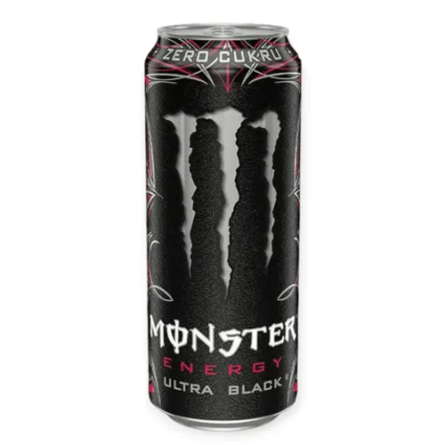
Mamy juz podium, a na nim potwor o smaku owocu, ktory nawet nie wiem jak wyglada. Jednak nic to nie zmienia w tym, ze ten smak ma to cos. Slodycz, orzezwienie, a w dodatku jest on bez cukru. Nie wiem od kiedy jest on na polskim rynku, lecz odkad go pierwszy raz wypilem to regularnie pojawia sie w moim zoladku. To on otwiera podium, lecz dwaj poprzedni konkurenci byli naprawde, blisko tego miejsca.
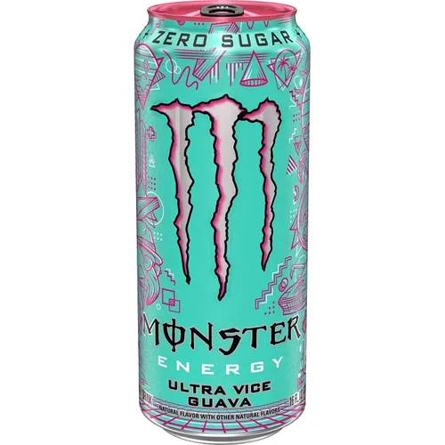
Kiedy mysle sobie, jaki jest najlepszy smak monstera, to mysle o nastepnym miejscu, jednak ten jest rowniez wspanialy. Slodycz tych tropikalnych owocow doprowadza do orgazmu w ustach. Ten smak to jest moje go to jesli chce monstera z cukrem. Niestety nie wiem kiedy, ale zostal on wycofany z PL i na jego pozycje moze wplywac moja nostalgia do tego smaku, nie mniej jednak napewno jest to jeden z lepszych smakow jakie byly dostepne w Polsce.
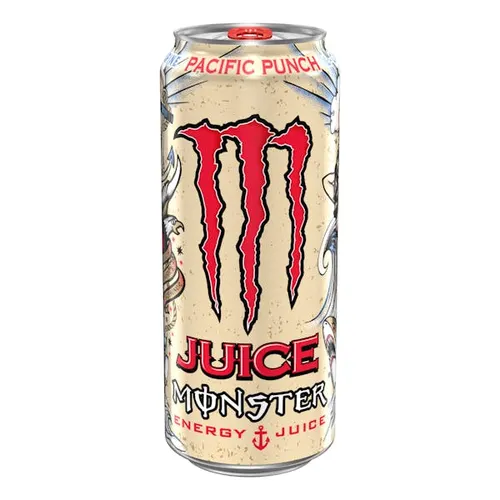
I mamy to, pierwsze miejsce na mojej liscie zajmuje Monster Mule. Jest to kontrowersyjne, ze wzgledu na jego odmienny smak, jednak ja uwielbiam imbir. Piwo imbirowe to jest jedno z moich ulubionych napowojow, a tutaj jest ono dodatkowo z kofeina. Gdyby ten smak byl w Polsce, bo niestety nie jest on teraz dostepny, a pilem go w sumie tylko jeden raz na Wegrzech, ale to musi o czyms swiadczyc, ze go ustawilem tutaj. Ale wracajac, gdyby byl on dostepny na polskim rynku, napewno na jednej puszce by sie u mnie nie skonczylo, mysle ze nawet nie byla by to jedna paleta, ale cala furgonetka tego pieknego smaku.
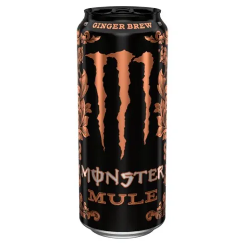
Tierlista jest subiektywna i nie zawarlem w niej wielu smakow, ale to dlatego, ze jest ich za duzo. Jest jeszcze wiele innych monsterow, ktore tez uwielbiam, lecz jest tez wiele, ktorych nie pamietam. Gdybym mial wszystkie smaki przed soba to tierlista moglaby wygladac inaczej, ale tutaj kierowalem sie glownie wspomnieniami, poniewaz na codzien to pije moze 3 smaki ze wszystkich tu wymienionych.
powrot